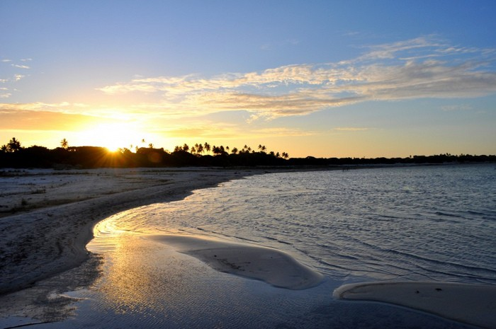
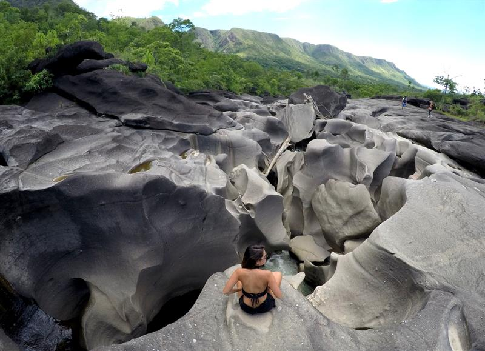
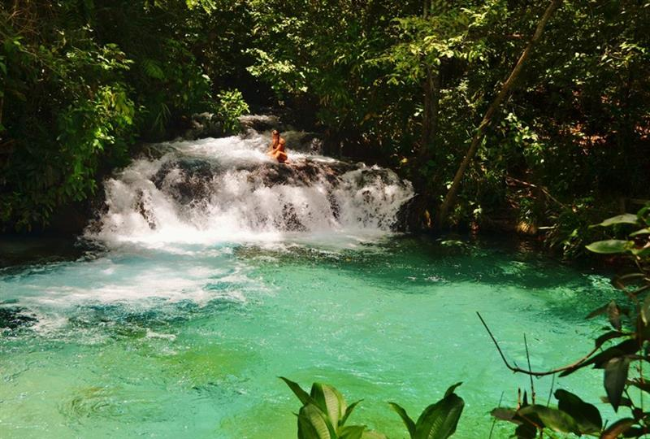
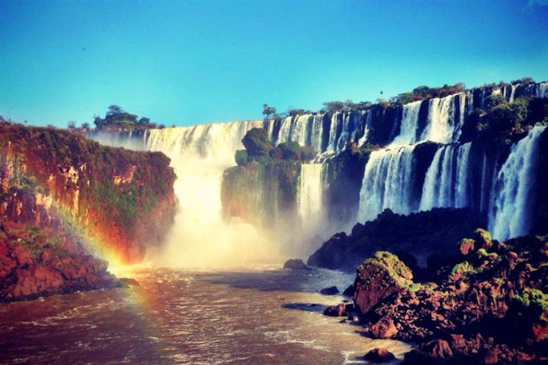

- Lagoa do Paraiso
-

A Lagoa do Paraíso, que fica no município de Jijoca, é, possivelmente, a lagoa que tem coloração mais bonita na região. Azul-claro e azul-escuro se misturam.
- Vale da Lua
-

Vale da Lua é um dos pontos mais visitados na Chapada dos Veadeiros, no município de Alto Paraíso de Goiás.
- Cachoeira do Formiga
-

Apesar de pequena , a queda tem grande volume de água e forma um poço cristalino de águas verdes em meio a árvores, samambaias e palmeiras nativas.
- Ilha de San Martin
-

A ilha alberga estâncias balneares movimentadas e enseadas desertas.